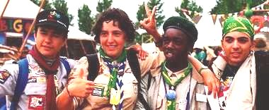

Organización Mundial del Movimiento Scout


 Constru-
-yendo la paz !
La paz en el mundo, entre los estados o entre los individuos no es una casualidad. Es una cultura, una actitud que se debe fomentar. Tendrás la posibilidad de descubrir y vivir una Cultura de Paz. Cada una de los siguientes puntos te guiarán:
-
Descubre los ocho llaves
de una Cultura de Paz.
-
Comprueba tus aptitudes con
juegos interactivos
para todas las unidades scouts.